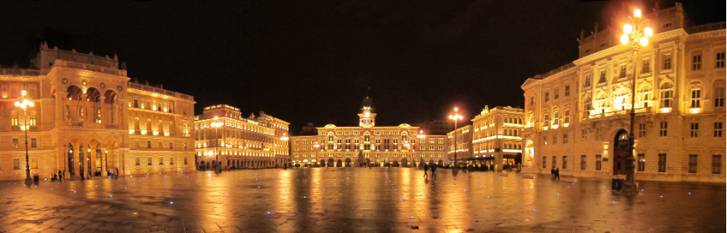
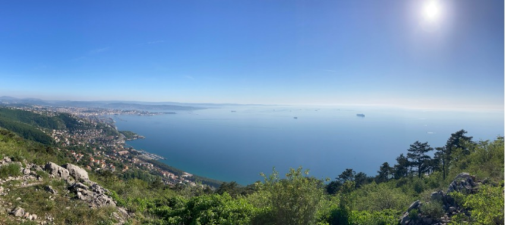
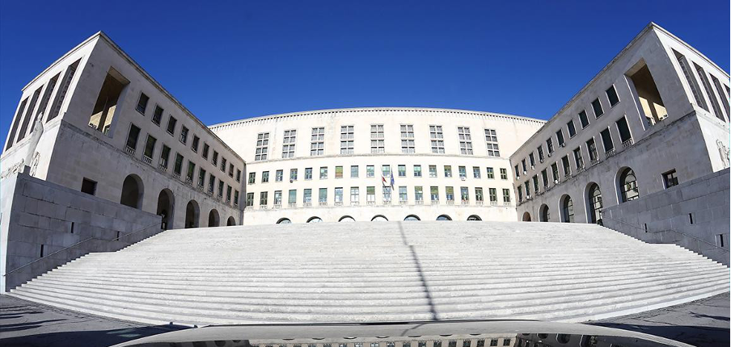

La città di Trieste


Luogo di svolgimento di Ital-IA 2025
I workshop del 23 giugno si svolgeranno presso l'Università di Trieste, Edificio D
Le sessioni plenarie del 24 giugno si svolgeranno presso l'Università di Trieste, Edificio H3
Entrambi gli edifici sono parte del campus principale dell'università a Piazzale Europa
Come raggiungere il campus dalla città
L'Università degli Studi di Trieste si trova a circa 3 chilometri da Piazza Unità d'Italia, il cuore della città. Di seguito sono riportate alcune opzioni per raggiungere la sede. È inoltre possibile visitare il sito web di Trieste Trasporti.
In autobus
Diverse linee di autobus collegano il centro città all'università.
Le linee più comuni includono: Linea 3, Linea 4, Linea 17, Linea 17/ e Linea 51.
Ognuna di queste linee ha diverse fermate nel centro città, quindi è possibile trovare una fermata nelle vicinanze a seconda del proprio hotel o del punto di partenza. Il viaggio in autobus dura circa 10-15 minuti.
I biglietti sono disponibili presso le edicole locali, tramite l'app "Trieste Trasporti" o con carta di credito direttamente sull'autobus.
A piedi
Se preferite camminare, l'università è raggiungibile in circa 35-40 minuti a piedi in salita da Piazza Unità.

Informazioni di viaggio
In aereo
Ci sono diverse opzioni per raggiungere Trieste in aereo. La città dispone di un proprio aeroporto, situato a circa 35 km dal centro, ma ci sono anche altre possibilità, come l’aeroporto di Venezia, quello di Treviso o quello di Lubiana.
Aeroporto di Trieste
Ci sono più collegamenti giornalieri con Roma operati da ITA Airways e un collegamento giornaliero con Francoforte operato da Lufthansa. Inoltre, diversi voli low cost collegano varie città europee.
L’aeroporto è collegato direttamente al centro città con il treno (~30 minuti, Trenitalia). È anche possibile prendere un taxi, con un costo di circa 60/70€.
Aeroporto Marco Polo di Venezia
La maggior parte delle compagnie aeree, incluse molte low cost, vola sull’aeroporto di Venezia.
Dall’aeroporto di Venezia si può prendere un autobus diretto per Trieste (~2 ore, Flixbus) oppure una navetta per la stazione ferroviaria di Mestre (~20 minuti, ATVO) e poi un treno per Trieste Centrale (~2 ore, Trenitalia).
Sono inoltre disponibili servizi navetta privati prenotabili in anticipo che vi porteranno direttamente dall’aeroporto al centro di Trieste (GoOpti).
Aeroporto di Treviso
L’aeroporto di Treviso offre numerosi collegamenti low cost con molte città europee.
Dall’aeroporto si può prendere un autobus per la stazione di Mestre (~40 minuti, ATVO) e poi un treno per Trieste Centrale (~2 ore, Trenitalia), oppure un autobus per la stazione ferroviaria di Treviso (~15 minuti) e successivamente un treno per Trieste Centrale (~2,5 ore, Trenitalia).
Anche in questo caso sono disponibili servizi navetta privati prenotabili in anticipo (GoOpti).
Aeroporto di Lubiana
Lubiana è ben collegata a molte destinazioni europee, sia con voli di linea che low cost.
Dall’aeroporto è possibile prendere un autobus per il centro città e poi un treno (~2,45 ore, Trenitalia) oppure un autobus diretto per Trieste Centrale (~1,30 ore, Flixbus).
Anche Lubiana è collegata a Trieste tramite servizi navetta privati prenotabili in anticipo (GoOpti).
In treno
Trieste è raggiungibile in treno dalle principali città italiane. Esistono, ad esempio, collegamenti diretti da Venezia (~2 ore), Milano (~4 ore), Bologna (~3,5 ore), Roma (~6 ore). Per maggiori informazioni consultare i siti Trenitalia e Italo.
Trieste è anche abbastanza ben collegata in treno con le principali città dell’Europa centrale. È possibile raggiungere Trieste da Vienna (~8 ore, anche con treni notturni), Monaco (~9 ore, anche con treni notturni), Lubiana (~2,30 ore). Per maggiori informazioni consultare i siti ÖBB, DB e Trenitalia.